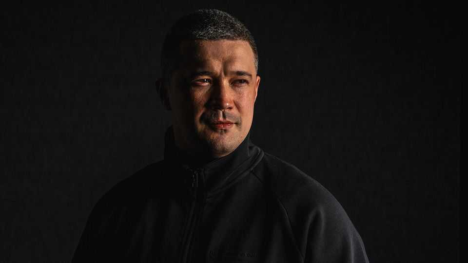

Ukraine’s reformist defence minister is ousted
The generals pushed back at his efforts to modernise the army
July 16th 2026

THE FIRING that people expected came first. On July 12th Volodymyr Zelensky announced the impending exit of his prime minister, Yuliia Svyrydenko, as part of a wider shake-up of his top team. The Ukrainian president needed someone with authority to reset fractious relations with parliament, and the pliant Ms Svyrydenko was never that. The more shocking news came three days later with the revelation that Mykhailo Fedorov (pictured), his popular defence minister, would also be leaving after just six months in the job. Mr Zelensky said there were problems in the “dialogue” between the army and the youngest member of his top team. A self-styled disrupter out to break the old system, Mr Fedorov had been quick to ruffle feathers, but slow to build alliances.
Mr Fedorov, 35, known to colleagues as Misha, began his tenure at the ministry in January amid high expectations. He came with solid reformist credentials. As digital-transformation minister, he had introduced Diia, a highly regarded app that put state services and digital passports on smartphones. After Russia’s full-scale invasion in 2022, he played a crucial role in building Ukraine’s “drone army”, introducing market mechanisms to boost the production of everything from small battlefield drones to bomber and interceptor drones. His supporters believed he was the man who could reform and modernise the army in the same way that he had digitised the government. The generals were less impressed, and set out to stymie him.
At a war council in early July, the tensions between Mr Fedorov and the military leadership simmered barely below the surface. The generals had good news for their president. Drone operations were succeeding. A campaign to isolate Russian-occupied Crimea was ahead of schedule. But as Power Point slides were shown to the testosterone-filled room, the generals griped about Mr Fedorov’s missile and ammunition procurement. The minister snapped back: If it wasn’t for his emergency drone-purchasing decisions at the beginning of the year, which required borrowing money earmarked for salaries, there would be no Crimean operation to speak of. A witness to the proceedings described “two different co-ordinate systems” in a clinch, with “no common language”.
Mr Fedorov’s six months in the ministry were marked by hyperactivity and a pugnacity that put many noses out of joint. He encroached on entrenched interests, and denied some powerful people lucrative contracts. He ordered a full audit of the ministry that uncovered overspending of 300bn hryvnia ($6.6bn). He subjected officials to lie detectors; those who refused or failed were dismissed. And he moved some procurement to open tenders, which he says cut the cost of artillery shells by 16%.
That was part of the reason for his troubles. The rest was self-inflicted. The minister has quarrelled openly with the army’s more traditionalist leaders, especially its commander-in-chief, Oleksandr Syrsky. It is well known that the defence minister angled for the general’s removal, but failed to win his president’s approval. A senior intelligence source warned before Mr Fedorov’s ouster that he never understood how small his chances of succeeding were: “Syrsky is experienced, knows the system much better than Misha, and will outfox him.”
Mr Fedorov’s first big reform package only began to be implemented in June, after months of haranguing and waiting for signoffs. On paper, it tackled the most urgent manpower problems. There would be a new deal for front line infantry. Monthly pay would increase threefold to $7,000 and fixed-term contracts of six, ten, 14 and 24 months would be introduced. There would also be a limited demobilisation for the longest-serving soldiers by the end of 2026. In addition, he earmarked more money for recruiting foreigners. The estimated 300,000 Ukrainians listed as absent without leave would also be given a 100-day window in which to return without punishment. Previously, those caught were sent to the hottest spots on the front-line, where the chances of surviving were slim.
Mr Fedorov’s critics in the army accept he has improved drone procurement and digitalisation. But they said his lack of military experience made him unqualified to plan a war. Some said his flagship reforms amounted to a “PR repackaging” of work that was already under way. The defence minister was the equivalent of a football “goalhanger” seizing credit for others’ ideas, said one senior general. Some likened him to a modern day Robert McNamara, the late American defence secretary who found that the managerial methods he had honed running Ford did not transfer well to the Pentagon. “To reform something you have to understand how it works,” said another Ukrainian general. “Would you really sit in an aeroplane if you saw that the pilot was a shopkeeper?”
On July 12th Mr Zelensky asked him if he was tempted by the newly vacant prime minister’s post. In usual circumstances that would have counted as a promotion; here it was read as a defeat for his project. The defence minister turned the job down, and it has since been offered to Serhiy Koretskiy, a well-regarded manager with a background in the energy industry. Mr Koretskiy was “the most prepared candidate” to navigate the challenges of what would be a difficult winter, Mr Zelensky said.
Reports suggest the interior minister, Ihor Klymenko, was poised to take over the defence ministry. At the time of writing, it was not clear if Mr Fedorov would be offered another job at all. It is likely he would turn down a demotion if offered one. In the days leading up to his defenestration, the minister admitted that he was worried that the support of his political patron was coming to an end, but that he had only followed instructions. “When I began the job, the president told me to act according to my conscience,” he said. “What can I do? I don’t want to leave this post knowing that I ever bent to suit anyone.” ■
To stay on top of the biggest European stories, sign up to Café Europa, our weekly subscriber-only newsletter.